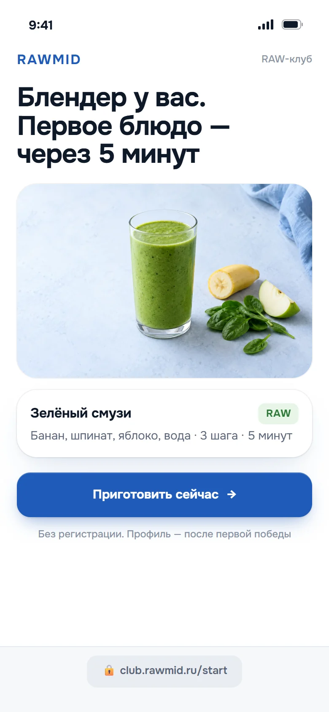
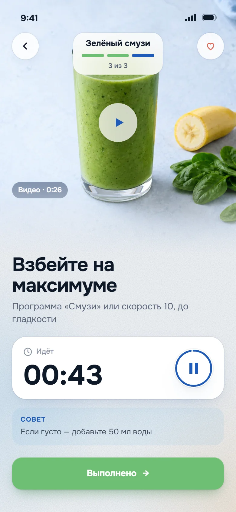
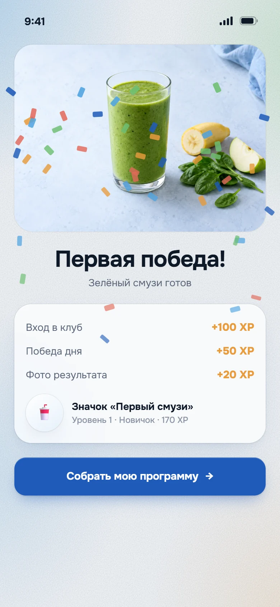
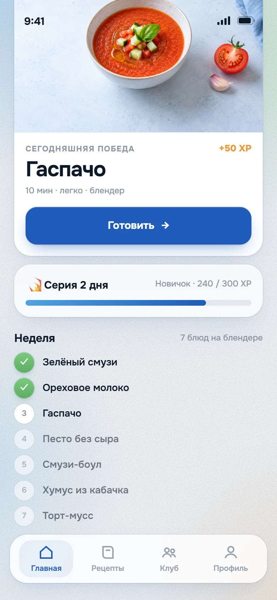
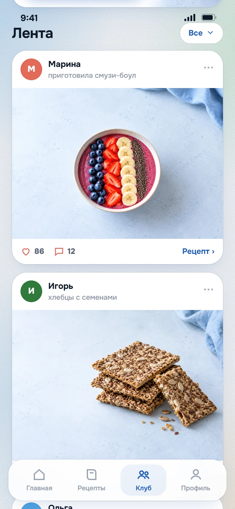
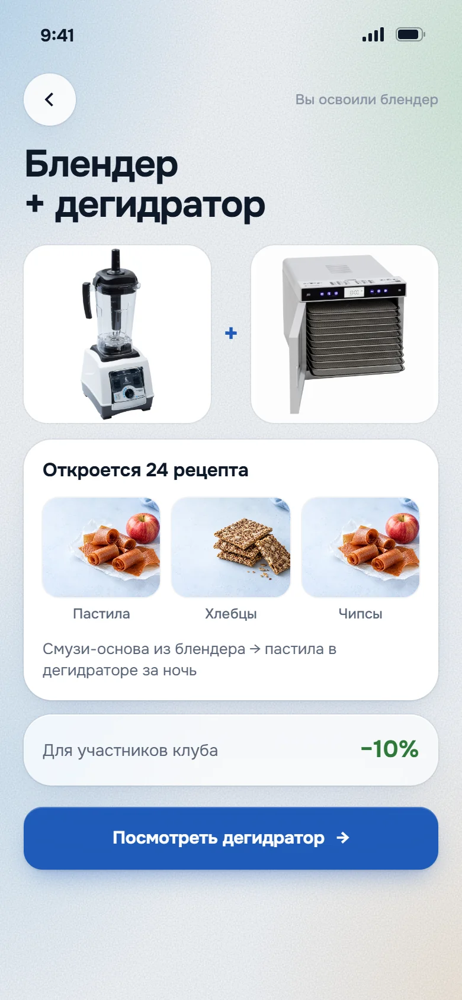

RAWMID
RAWMID_/_01
Идея
Покупатель блендера сканирует QR на коробке и через пять минут готовит первое блюдо. Регистрации нет: профиль появляется после первой победы.
Дальше неделя рецептов на той же технике, клуб с лентой и конкурсами и следующая покупка со скидкой для участников клуба. Каждый шаг ведёт к следующему.
- 01QR на коробкеСканировал и сразу готовит. Без регистрации

- 02Первое блюдо за 5 минутТри шага с видео и таймером

- 03Победа раньше анкетыЗначок и XP до того, как спросили имя

- 047 дней — привычкаКаждый день новое блюдо на той же технике

- 05Клуб, а не покупкаФото в ленте, лайки, конкурсы с призами

- 06Следующая покупкаОсвоил блендер — дегидратор со скидкой клуба

RAWMID_/_02
Прототип
Прототип сам проходит эти шесть шагов: от сканирования коробки до предложения дегидратора. Подпись рядом с телефоном называет шаг.